Phone
PHONE · Contact input box with automatic hyphens
What is a Phone field?
- 1.1Adding a field and the property panel layout
1.1Adding a field and the property panel layout
Overview
Phone (PHONE) is an input box for collecting contact numbers of subjects · guardians · staff. When added, an input box with the 010-0000-0000 hint appears on the canvas. Its key feature is that hyphens are added automatically — even if the recorder types only digits, the system checks the number of digits and converts it to the 010- 1234-5678 format.
Screen guide
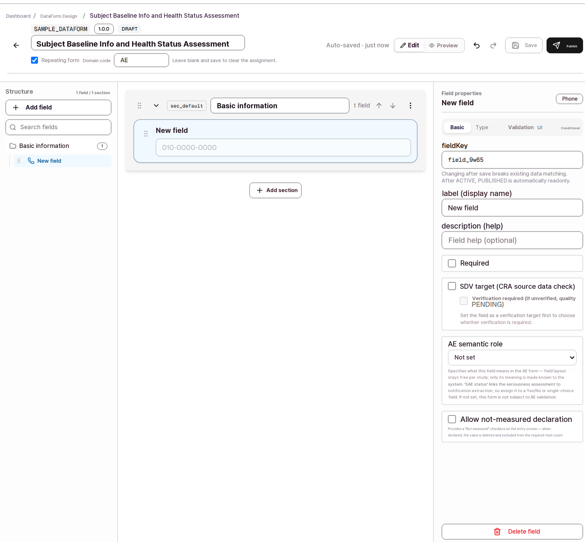
[+ Add field] — Specify the type here to create the field.
The new field is added to the structure tree. The icon is a telephone handset.
An input box appears on the WYSIWYG canvas, showing the 010-0000-0000 hint. You can change this text in the UI tab. 5.4
fieldKey — The actual key under which the value is stored. 2.1
label (display name) · description (help) — The name and supporting description shown on screen. 2.1
Required · SDV target — Covered in 2.2 · 2.3.
AE semantic role — As the on-screen notice states, the valid targets are Yes/No or single-choice fields, so do not set it for this type.
Allow not-measured declaration — Covered in 2.4.
Type badge “Phone” — The type of the selected field. It cannot be changed after the field is added.
5 property tabs — Basic · Type settings · Validation · UI · Conditional. Chapters 2–6 of this manual correspond to these tabs.
Precautions
Must check Data corruption · Form cannot be completed
- • ⛔ Phone numbers are personal information. Because they can lead to identifying a subject, they are masked depending on the role — “Masking ON” at the top of the screen indicates this. Collect only the contact numbers you really need, and write in the help why they are needed. 2.1
- • The type cannot be changed after the field is added, and after publishing (PUBLISH) the structure itself cannot be changed. If you chose the wrong type, delete the field and add it again.
Easily misunderstood behavior
- • Hyphens are added automatically. There is no need to tell recorders to “enter it with -” — the system inserts them even if only digits are typed. However, the stored value also includes the hyphens, so take care when creating validation rules. 4.2
Basic tab — name · required · verification target · not measured
- 2.1fieldKey · display name · help
- 2.2Required
- 2.3SDV target (CRA source data check)
- 2.4Allow not-measured declaration
2.1fieldKey · display name · help
Overview
This area sets the field's name. The storage key (fieldKey) and the name shown on screen (label) are different values, and the times when you may change them differ. For a contact number, whose number it is must be clear, so write a specific display name.
Screen guide
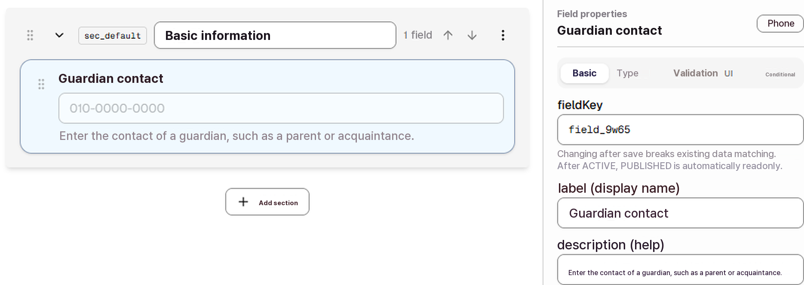
label (display name) — Enter the item name to show on the entry screen.
It is shown as the field title on the canvas.
description (help) — Enter a supporting description to show below the display name. If left blank, nothing is shown.
Shown in gray text below the input box. In the capture it is “Enter the contact of a guardian, such as a parent or acquaintance.”
fieldKey — The actual key the value is stored under. It is assigned automatically when you add a field, like field_9w65, and as the on-screen note says, “Changing after save breaks existing data matching”.
Precautions
Must check Data corruption · Form cannot be completed
- • State in the display name whose number it is. With “Contact” alone, you cannot tell whether it is the subject's own number or a guardian's, so numbers of different people get mixed in the same box. Write “Guardian contact” as in the capture.
- • Write in the help the situation the number is used for. The number the recorder takes down differs depending on whether it is for emergency contact or for visit notices.
- • Do not change fieldKey after saving. The link to data already entered is broken, and the validation rules 4.3 and conditional display Ch. 6 that reference this field break as well.
Easily misunderstood behavior
- • The display name (label) can be changed at any time. It does not affect stored values.
2.2Required
Overview
Set whether this field must be filled in before the form can be completed. A contact number is an item that may not exist or may not be disclosed, so before making it required, first decide how to record such cases. 2.4
Screen guide
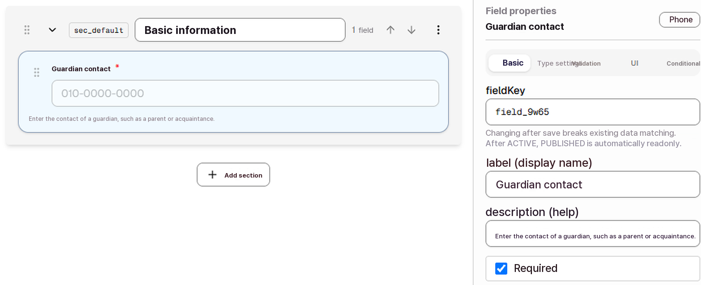
* next to the display name on the canvasRequired — When selected, this field becomes a required item.
A red * appears to the right of the display name on the canvas.
label · description — The values entered in 2.1 are shown as is.
Precautions
Must check Data corruption · Form cannot be completed
- • ⛔ If a contact number is required, recorders end up filling in arbitrary numbers. Cases where there is no guardian or the number is not disclosed do occur — if you make it required, be sure to also turn on the not-measured declaration 2.4.
- • Whether the format is correct has nothing to do with the Required setting. Required only checks that the value is not empty — it passes even if digits are missing. To block wrong formats, use a validation rule. 4.2
- • Hidden fields are excluded from the required check. While hidden by conditional display Ch. 6, the form is completed with the field empty even if it is required.
Note
- • If the not-measured declaration is on and the recorder declares it, the form can be completed even if the item is required. 2.4
2.3SDV target (CRA source data check)
Overview
SDV (Source Data Verification) is the procedure in which the clinical research associate (CRA) checks entered values against the site's source data. Here you decide whether this field is a target of that procedure. This setting is the same for all field types, so the screen is also the same regardless of type.
Screen guide


SDV target (CRA source data check) — When selected, this field is included in the CRA's check list.
When it becomes selected, the sub-item is enabled.
Verification required (if unverified, quality PENDING) — Can be set only after ① is selected. When selected, the quality status of the data stays at PENDING until the CRA finishes the check.
Before ① is selected, ② is grayed out and disabled. As the on-screen notice says, “Set the field as a verification target first to choose whether verification is required.”
Precautions
Must check Data corruption · Form cannot be completed
- • ⛔ Decide carefully before making a contact number an SDV target. To check it, the CRA has to see the unmasked number, but phone numbers are personal information and are masked depending on the role. First confirm that the contact number really needs to be checked. 1.1
- • When the value changes, verification is cleared. If the number is corrected, the quality status returns to PENDING and the CRA must check it again.
Easily misunderstood behavior
- • SDV cannot be performed by the person who entered the data. The system enforces cross-verification (Cross-User SoD), so the person entering and the person verifying must be different.
Note
- • The quality status progresses in the order PENDING → VERIFIED → CLEAN. If even one field marked verification required is unverified, the data cannot become CLEAN.
2.4Allow not-measured declaration
Overview
A function for recording, as a distinct value, cases where the answer cannot be confirmed. For a contact number, “not asked yet” and “asked but not disclosed” are completely different situations, yet if the box is left blank you cannot tell them apart — this declaration separates the two.
Screen guide

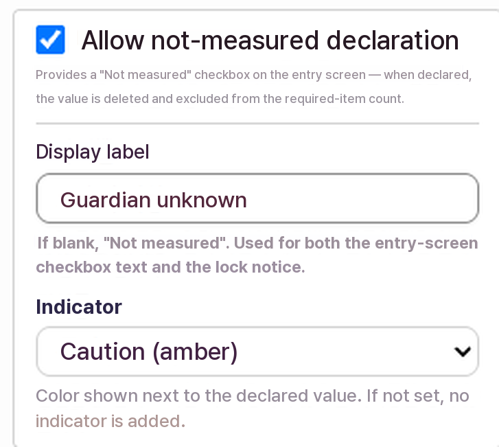
Allow not-measured declaration — When selected, a “Not measured” checkbox is created on the entry screen and the two items below appear.
Display label — If left blank, the default “Not measured” is used.
If you change it to Guardian unknown, this text is applied to both the checkbox on the entry screen and the lock notice.
Indicator — The default is None.
If you change it to Caution (amber), a mark in that color appears next to the declared value.
Precautions
Must check Data corruption · Form cannot be completed
- • ⛔ Contact numbers especially need this declaration. If it is not turned on, recorders fill in fake numbers such as
010-0000-0000, and because such values are formally valid, they are not caught by any validation. - • Declaring deletes the value. As the on-screen notice says — “When declared, the value is deleted and excluded from the required-item count.”
Easily misunderstood behavior
- • Declared fields are excluded from the required-item count. Therefore the form can be completed even if the item is required.
Note
- • If no indicator is set, no color mark is applied. If emphasis is needed, select Caution (amber) or another option.
Type settings tab — a type with no type-specific settings
- 3.1Type settings tab layout
- 3.2Default value (defaultValue)
3.1Overall layout
Overview
Phone is a type with no type-specific settings. This is because there is no format to choose — the rule for inserting hyphens based on the number of digits is already fixed. So this tab contains only a one-line notice and the two items attached to every type.
Screen guide
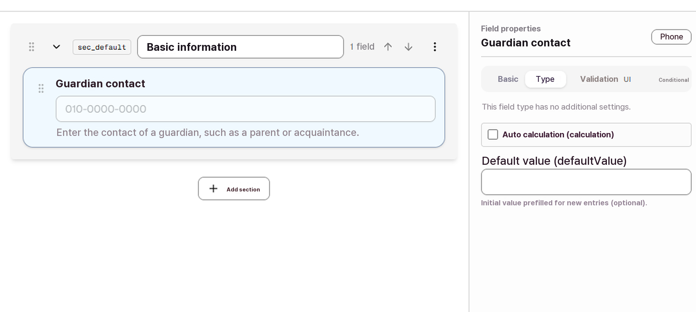
Default value (defaultValue) — The value prefilled for new entries. It is empty at first. 3.2
On-screen notice — “This field type has no additional settings.” Items such as allowed digits · area code · country selection cannot be specified.
Auto calculation (calculation) — The item is shown, but it is not used for this type. There is no reason to derive a phone number from a formula.
Type badge “Phone” — The type of the field being configured.
Property tabs — Currently the Type settings tab.
Precautions
Must check Data corruption · Form cannot be completed
- • ⛔ Only the Korean format is applied. If you need to collect numbers from outside Korea, the digit counts do not match and hyphens are inserted in the wrong places. Create such items as Single-line text, not this type.
Easily misunderstood behavior
- • The system decides the format. As digits are typed, Seoul (02) numbers are formatted as
02-123-4567·02-1234-5678, and all others as010-123-4567·010-1234-5678. This is not something the author can change. - • To enforce the number of digits, use the Validation tab. However, the stored value includes hyphens, so take care how you write the rule. 4.2
Note
- • There is no country code selection item on the screen. It is defined in the system but not provided on the authoring screen. (※ 7.2)
3.2Default value (defaultValue)
Overview
Set the number to prefill for new entries. It is empty at first. Unlike other types, it can be checked directly on the edit screen — the value appears in the canvas input box without going to Preview.
Screen guide
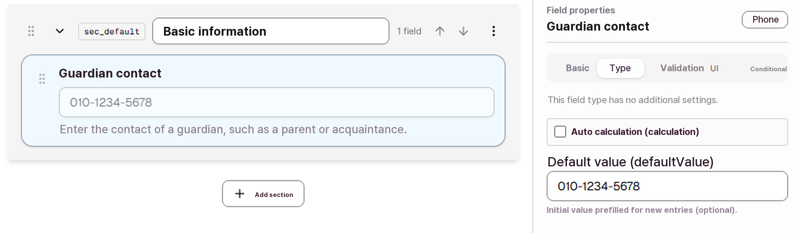
Default value (defaultValue) — Enter the number to prefill. In the capture it is 010-1234-5678.
That number is shown as is in the canvas input box. Unlike True/False · Single choice, you can check it without going to [Preview].
Auto calculation (calculation) — Not used for this type. 3.1
Precautions
Must check Data corruption · Form cannot be completed
- • ⛔ Do not set a default value for contact numbers. A number is already filled in even if the recorder does not check it, so someone else's number may be saved. In clinical trial data this is not a simple typo but an incident in which personal information is recorded incorrectly. 1.1
- • ⛔ Using an example number as the default value is especially dangerous. A value such as
010-1234-5678is formally valid, so it is not caught by any validation and is saved as is. Leave it blank whenever possible. - • A field with a default value passes the required check even if the recorder never touches it. Take particular care when using it together with Required 2.2.
Easily misunderstood behavior
- • A number entered as the default value is also shown with hyphens adjusted automatically.
Validation tab — checking values before saving
- 4.1No validation rules
- 4.2Adding a rule
- 4.3Completed rule — Compare with another field
4.1No validation rules
Overview
The tab that holds rules checking whether a value meets conditions before it is saved. Phone only adds hyphens automatically — it is saved as is even if digits are missing. To enforce the format, you must create a rule in this tab.
Screen guide
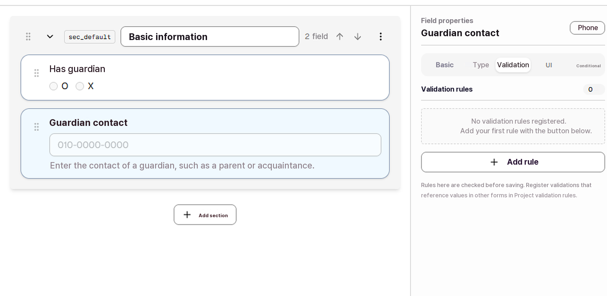
[+ Add rule] — Creates the first rule. The screen after selecting it is explained in 4.2.
The Validation rules area and the number of registered rules. Initially it is 0 items.
When there are no rules, the notice “No validation rules registered. Add your first rule with the button below.” is shown.
Notice at the bottom — “Rules here are checked before saving. Register validations that reference values in other forms in Project validation rules.”
Precautions
Must check Data corruption · Form cannot be completed
- • ⛔ Automatic hyphens are not a format check. Values with missing digits, like
010-12, are still saved — a hyphen being added does not mean the number is correct. A rule is needed to require a complete number. 4.2 - • ⛔ Validations that reference values in other forms cannot be created here. Register such rules on the “Project validation rules” screen.
- • The Validation tab is not restricted by type. You can also choose rules that do not suit Phone, so you must check yourself that the chosen rule works for this type. 4.2
Easily misunderstood behavior
- • The capture has two fields: “Has guardian” (Single choice) and “Guardian contact” — whether the contact can be entered depends on the answer to the first field, so 4.3 creates a rule linking the two fields.
4.2Adding a rule
Overview
Selecting [+ Add rule] in 4.1 creates a Rule 1 block. “Value range” is set at first, but a phone number is not a number — it is a string containing hyphens, so size comparison does not apply — change it to “Format (regex)” or “Compare with another field”.
Screen guide
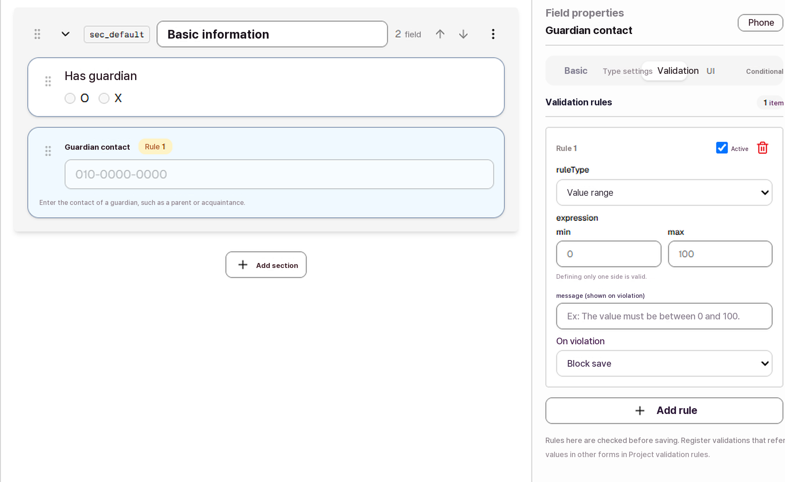
[+ Add rule] — Creates one more rule. (It is the same button you selected in 4.1.)
A “Rule 1” badge appears next to the display name on the canvas.
The number of rules changes to 1 item.
Active checkbox and Delete icon — You can pause a rule without deleting it.
ruleType — The type of rule. Right after creation it is “Value range”, so change it to the rule you want to use.
min — The lower-limit box that appears when Value range is chosen.
max — The upper-limit box that appears under the same condition.
message (shown on violation) — The message shown to users when the rule is violated.
On violation — Select either Block save or Warning. (Depending on ruleType, it may not be selectable — 4.3)
The faint 0 · 100 and “Defining only one side is valid.” are guidance for Value range, not set values.
Precautions
Must check Data corruption · Form cannot be completed
- • ⛔ Write the regex including the hyphens. The stored value is not digits only but a string with hyphens (
010-1234-5678). An expression that assumes digits only (^01[0-9]{8,9}$) rejects even valid input — write it with the hyphen positions included, like^01\d-\d{3,4}-\d{4}$. - • ⛔ Do not use “Value range” · “Decimal places”. A phone number is a string, not a number, so neither size nor decimal points apply. Even so, the screen lets you choose them, so the author must filter them out.
- • If you also accept Seoul numbers, make the expression broader.
02-123-4567has a two-digit prefix, so it is caught by an expression that assumes mobile numbers only. 3.1 - • If message is left blank, users cannot tell why saving was blocked. Be sure to enter it.
4.3Completed rule — Compare with another field
Overview
If you change ruleType to Compare with another field, the value is checked against the value of another field in the same form. You can express relationships in which whether input is allowed depends on the answer to an earlier question, such as “collect the contact number only if the answer is that there is a guardian”.
Screen guide
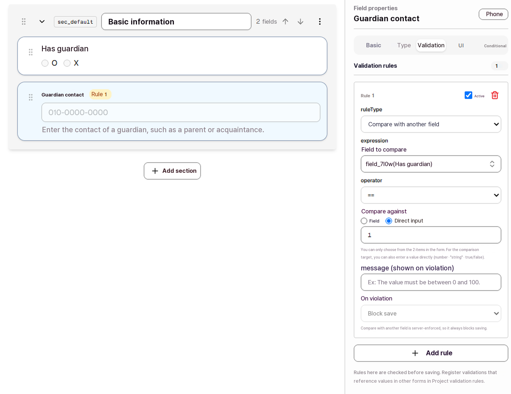
1 — message is emptyruleType = Compare with another field — When selected, the boxes below change for comparison.
Field to compare — Select another field in the same form. In the capture it is field_7l0w(Has guardian), a Single choice field.
operator — The comparison method. The capture shows == (equals).
Compare against — Choose between Field and Direct input. In the capture, 1 was entered via direct input — the stored value of “Has guardian”.
message (shown on violation) — It is empty in the capture. The faint text “Ex: The value must be between 0 and 100.” is an input example, not a set value.
On violation — Grayed out and disabled. As the on-screen notice says, “Compare with another field is server-enforced, so it always blocks saving.” — for this rule, Warning cannot be chosen and it is fixed to Block save.
On-screen notice — “You can only choose from the 2 items in the form. For the comparison target, you can also enter a value directly (number · "string" · true/false).”
Precautions
Must check Data corruption · Form cannot be completed
- • ⛔ The message in the capture is empty — do not publish in this state. This rule's On violation is fixed to Block save, and without a message the recorder is blocked from saving without knowing why. Be sure to write one, such as “Can be entered only if there is a guardian.”
- • ⛔ In Compare against, enter the stored value, not the text shown on screen. “Has guardian” in the capture appears as
O·Xon screen, but its stored value is1. Check the option list of the referenced field first.
Easily misunderstood behavior
- • This rule cannot be set to Warning. Use it only for relationships that must be blocked. If you only want to inform, it is better not to ask at all by using conditional display Ch. 6.
- • If this field is empty, the rule is not checked. Preventing missing input is the job of Required 2.2.
UI tab — screen layout and guidance text
- 5.1UI tab layout
- 5.2Layout width
- 5.3Read-only · hidden
- 5.4placeholder · helpText
5.1Overall layout
Overview
The tab that sets how the field is laid out on screen and how it is guided, not the value itself. Settings in this tab do not change the stored data itself. Phone is a type in which placeholder works normally, so there are two places for guidance text. 5.4
Screen guide
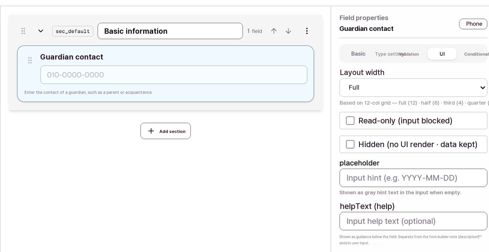
Layout width — The width this field takes up in one row of the form. 5.2
Read-only (input blocked) — Shows the field but prevents changes. 5.3
Hidden (no UI render · data kept) — Hides the field from the screen. 5.3
placeholder — Faint hint text inside the input box. If not set, 010-0000-0000 is applied. 5.4
helpText (help) — Guidance text shown below the field. 5.4
Type badge “Phone”
Precautions
Must check Data corruption · Form cannot be completed
- • ⛔ Hidden does not delete the stored number. It is only hidden on screen; the value remains and is included in exports and the audit trail. 5.3
Easily misunderstood behavior
- • Settings in this tab do not change stored values. Only the layout and guidance change.
- • Even if placeholder is left empty, the input box does not look empty, because
010-0000-0000is in place by default. 5.4
Note
- • Do not use Read-only and Hidden together. Hidden takes precedence, so the Read-only setting has no effect. 5.3
5.2Layout width
Overview
Set the width this field takes up in one row of the form. A phone number is a short item of fixed length, so using the full width leaves a large empty space on the right — grouping it in one row with other short items makes the form shorter.
Screen guide
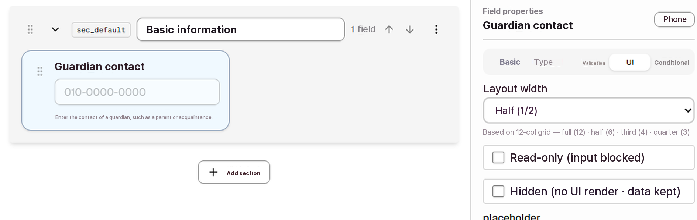
Layout width — Select from Full · Half (1/2) · 1/3 · 1/4.
The canvas input box shrinks to half width. Other fields are placed in the remaining space on the same row.
Based on 12-col grid — As the on-screen notice says, “full (12) · half (6) · third (4) · quarter (3)”.
Precautions
Must check Data corruption · Form cannot be completed
- • ⛔ Reducing to 1/4 cuts off the placeholder. The hint text can be longer than the value (
ex) 010 - 1234 - 5678), so its end is not visible. 5.4
Easily misunderstood behavior
- • Up to half is safe. A number does not exceed 13 characters (
010-1234-5678), so the value is not cut off even when narrowed. - • Group it in one row with items such as name · relationship. Placing items that are read together, such as guardian information, side by side speeds up recording.
Note
- • If not set, full width is applied.
5.3Read-only · hidden
Overview
Settings that show the field but prevent changes, or hide it on screen while keeping the value. Neither deletes the stored number.
Screen guide
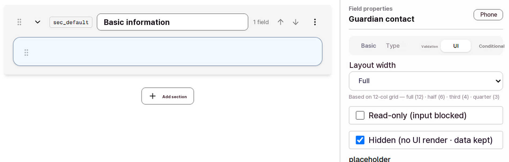
Read-only (input blocked) — When selected, the number is shown but the recorder cannot correct it.
Hidden (no UI render · data kept) — When selected, this field is not shown on the entry screen.
Only an empty border remains of the canvas card. Neither the display name nor the input box is shown.
Layout width — The value set in 5.2.
Precautions
Must check Data corruption · Form cannot be completed
- • ⛔ Do not cover a wrongly entered number with Hidden. The value remains and is included in exports and the audit trail. If personal information has been recorded incorrectly, the value must be corrected, not hidden. 1.1
- • Hidden is not a means of protecting personal information. Masking numbers depending on the role is handled by the system's masking, which is separate from this setting. 1.1
Easily misunderstood behavior
- • Use Read-only for numbers brought in from elsewhere. Do not use it for items the recorder must take down directly.
- • To hide the field depending on a condition, use conditional display. Hidden in this tab always hides the field. Ch. 6
5.4placeholder · helpText
Overview
Set the guidance text that goes inside and below the input box. Phone is a type in which both places work normally — placeholder changes the faint text inside the input box, and helpText changes the guidance below the field.
Screen guide
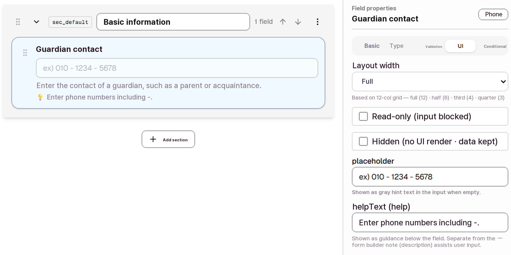
placeholder — Faint text shown in the input box when there is no value. If not set, 010-0000-0000 is applied.
The faint text in the canvas input box is replaced with the entered text.
helpText (help) — Guidance text shown below the field.
It is shown below the input box with a 💡 icon.
description (help) — The text entered in 2.1. It is a different item from helpText and is shown without an icon.
Precautions
Must check Data corruption · Form cannot be completed
- • ⛔ Do not put spaces in the placeholder.
ex) 010 - 1234 - 5678in the capture has spaces on both sides of the hyphens, which differs from what is actually entered (010-1234-5678). Recorders get confused trying to type the spaces too — write the actual format exactly. - • ⛔ The helpText in the capture is incorrect. It says “Enter phone numbers including -.”, but hyphens are added automatically — the recorder only needs to type digits. This guidance actually encourages unnecessary input, so delete or change it. 1.1
- • In helpText, write “whose number it is” instead of the format. The system takes care of the format, so it is more useful to write content that requires judgment, such as “times when the person can be reached” or “contacts other than the subject only with consent”.
Easily misunderstood behavior
- • description and helpText are shown together. If you enter both, they make two lines, so do not write the same content twice. 2.1
Conditional tab — showing a field based on another value
- 6.1Enabling conditional display
- 6.2Setting the condition
6.1Enabling conditional display
Overview
A function that shows or hides this field depending on the value of another field. It is a particularly good fit for contact numbers — by not asking subjects to whom it does not apply for a number at all, you avoid collecting unnecessary personal information.
Screen guide
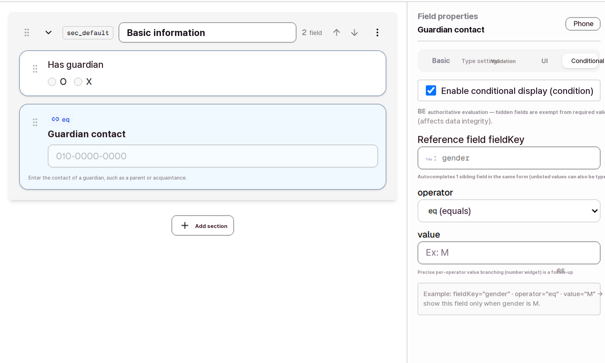
Enable conditional display (condition) — When selected, the condition settings below appear.
A 🔗 eq badge appears above the field on the canvas to show that a condition is applied.
Reference field fieldKey — Another field in the same form on which the condition is based. Sibling fields in the same form are autocompleted, and you can also type a value not in the list.
operator — The comparison method. The default is eq (equals).
value — The value to compare. Enter the stored value of the reference field. 6.2
⚠ On-screen notice — “Hidden fields are exempt from required validation (affects data integrity).” The condition is evaluated by the system.
Example at the bottom — fieldKey="gender" · operator="eq" · value="M" → show this field only when gender is M.
Precautions
Must check Data corruption · Form cannot be completed
- • ⛔ Setting a condition exempts the field from required validation. While it is hidden because the condition is not met, the form is completed with the field empty even if it is required.
- • ⛔ If the condition becomes false after a value has been entered, the number disappears from the screen. The value itself remains, so when you later change the field the condition is based on, check the remaining numbers first.
Easily misunderstood behavior
- • The principle is to ask for personal information only when needed. If a subject without a guardian is shown the guardian contact box, it is left blank or filled with a wrong number — conditional display prevents both.
Note
- • If you enable the condition and leave the reference field blank, the condition is never met. Be sure to fill in all of ②–④. 6.2
6.2Setting the condition
Overview
The condition activated in 6.1, fully entered. With this setting, the contact input box is shown on screen only when the value of the “Has guardian” field is 1. Because the referenced field is Single choice, its stored value is a string, and entering that value as is in the value box makes the condition work correctly.
Screen guide
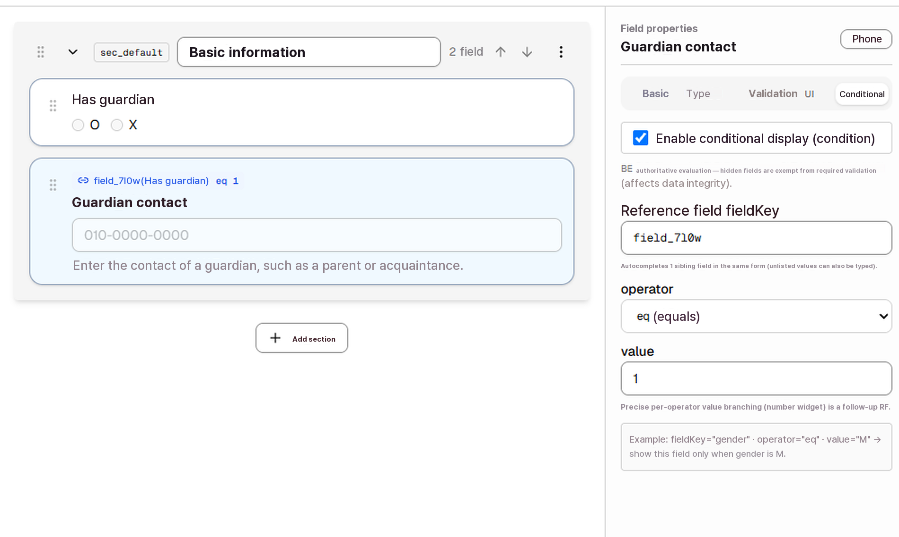
Has guardian is 1Reference field fieldKey = field_7l0w — Points to the “Has guardian” field in the same form.
Result of entering all of ①~③ — the canvas badge becomes specific: 🔗 field_7l0w(Has guardian) eq 1.
operator = eq (equals)
value = 1 — Enter the stored value of the option, not the O shown on screen.
⚠ On-screen notice — “Hidden fields are exempt from required validation (affects data integrity).”
Example at the bottom — fieldKey="gender" · operator="eq" · value="M" → show this field only when gender is M.
Precautions
Must check Data corruption · Form cannot be completed
- • ⛔ In value, enter the stored value, not the on-screen text. If you write
O, the condition is never met and the contact box is never shown. Check the stored value in the option list of the referenced field first. - • ⛔ Changing the stored value of the reference field silently breaks the condition. If the stored value is changed from
1toY, this condition simply stops being met without any error — that is why changing stored values after publishing is risky. - • The same relationship can also be created as a validation rule 4.3. Applying both creates a redundancy that both skips the question and blocks saving, so use only one of them.
Easily misunderstood behavior
- • After setting it, check it in Preview. You must change the reference value back and forth and confirm that the input box actually appears and disappears.
Appendix
- 7.1Settings by tab at a glance
- 7.2Must remember · not covered
7.1Settings by tab at a glance
Settings by tab
| Tab | Item | What it sets | Section |
|---|---|---|---|
| Basic | fieldKey | The actual key under which the value is stored (do not change after saving) | 2.1 |
| label (display name) | Item name shown on screen — state whose number it is | 2.1 | |
| description (help) | Supporting description below the input box — what situation the number is for | 2.1 | |
| Required | Whether input is mandatory (the format is not checked) | 2.2 | |
| SDV target | Whether it is a CRA source data check target (beware of conflict with masking) | 2.3 | |
| AE semantic role | This type is not a valid target | 1.1 | |
| Allow not-measured declaration | A way to record “not disclosed” — especially needed for this type | 2.4 | |
| Type settings | (Type-specific settings) | None — the system decides the format | 3.1 |
| Default value (defaultValue) | Number to prefill (leave blank whenever possible · check directly on the canvas) | 3.2 | |
| Validation | ruleType | Kind of rule — Format (regex) or Compare with another field | 4.2 · 4.3 |
| expression | Write the regex including the hyphens (^01\d-\d{3,4}-\d{4}$) | 4.2 | |
| message | Message shown to users on violation — never leave blank | 4.3 | |
| On violation · Active | Compare with another field is fixed to Block save · rule active · inactive | 4.3 | |
| UI | Layout width | Width on the 12-col grid (up to half is safe) | 5.2 |
| Read-only | Shown but cannot be corrected | 5.3 | |
| Hidden | Not shown on screen (the stored number remains as is) | 5.3 | |
| placeholder · helpText | Both work normally — the default placeholder is 010-0000-0000 | 5.4 | |
| Conditional | Condition active | Whether conditional display is used (exempt from required validation) | 6.1 |
| Reference field fieldKey | Field in the same form on which the condition is based | 6.2 | |
| operator · value | Comparison method and value to compare (enter the stored value) | 6.2 |
Automatic hyphen rule
| Prefix | Number of digits | Displayed format |
|---|---|---|
Seoul (02) | 9 digits | 02-123-4567 |
| 10 digits | 02-1234-5678 | |
Others (3 digits, e.g. 010 · area codes) | 10 digits | 010-123-4567 |
| 11 digits | 010-1234-5678 | |
| Digits beyond the count | Not discarded — they remain as is in the last group |
7.2Must remember · not covered
Must remember
Must check Data corruption · Form cannot be completed
- • Phone numbers are personal information. Collect only the contact numbers you really need, and do not ask subjects to whom it does not apply at all, by using conditional display. 1.1 · 6.1
- • Write the regex including the hyphens. The stored value is
010-1234-5678, so an expression that assumes digits only rejects all valid input. 4.2 - • Do not set a default value. An example number is formally valid, so it is not caught by any validation and is saved as is. 3.2
- • If you make it required, also turn on the not-measured declaration. Otherwise recorders fill in fake numbers. 2.2 · 2.4
- • It is saved even if digits are missing. Automatic hyphens are not a format check — a validation rule is needed to require a complete number. 4.1
- • Do not leave message empty. “Compare with another field” is fixed to Block save, so without a message the recorder cannot know why. 4.3
Easily misunderstood behavior
- • Hyphens are added automatically. Guidance to “enter it with -” is unnecessary — the recorder only needs to type digits. 5.4
- • Only the Korean format is applied. If you need to collect numbers from outside Korea, use the Single-line text type. 3.1
- • The default value is visible directly on the edit screen. Unlike True/False · Single choice, there is no need to go to Preview. 3.2
Note
- • Hidden is not a means of protecting personal information. Masking numbers by role is handled by the system's masking. 5.3
Not covered in this document
※ Country code selection — Defined in the system, but there is no item on the authoring screen. Currently only the Korean format is applied, and per-country format branching is not provided. 3.1
Allowed digits · area code setting — There is no item in the Type settings tab. To enforce the number of digits, use Format (regex) in the Validation tab. 3.1 · 4.2
Auto calculation (calculation) — The item is shown in the Type settings tab, but it is not used for this type. It derives values from a formula, so use it with the Number type. 3.1
AE semantic role — The item exists in the Basic tab, but this type is not a valid target. Assign it to Yes/No or single-choice fields. 1.1
Role-based masking rules — Who sees the number masked and how is a matter of permission settings and is not set in these tabs. 1.1 · 5.3